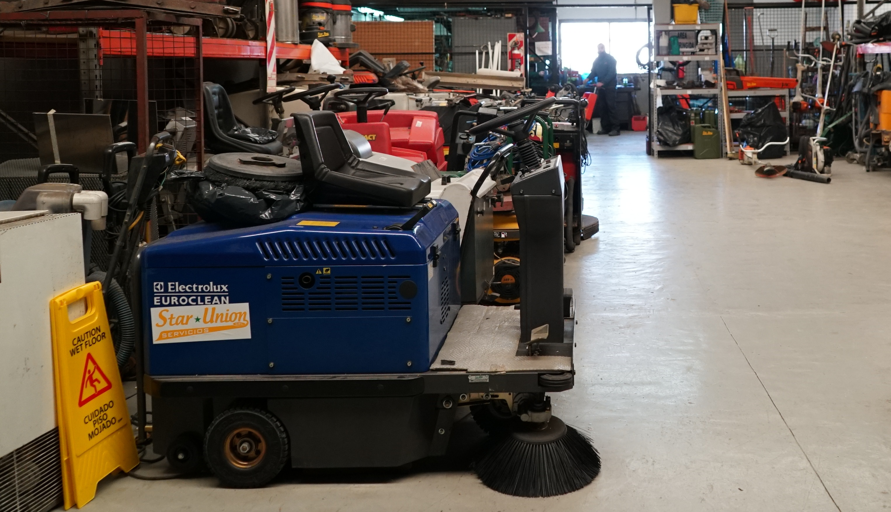
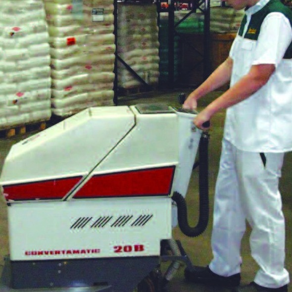
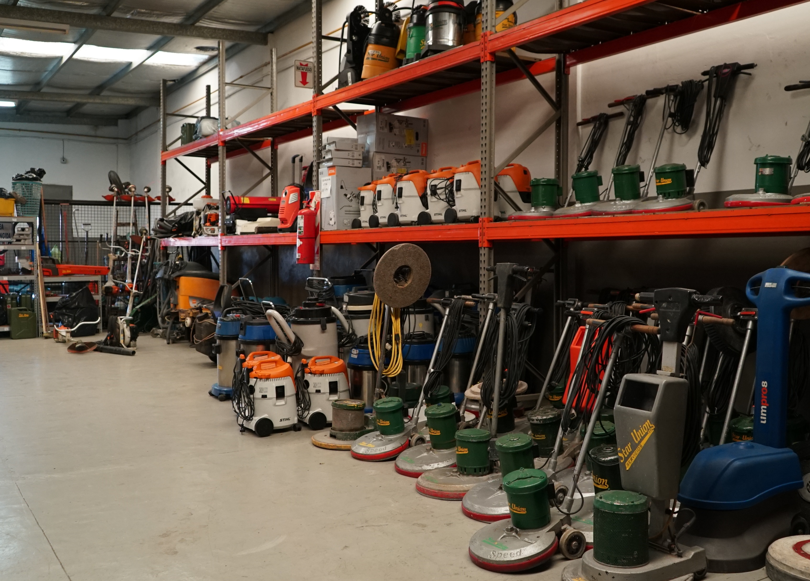
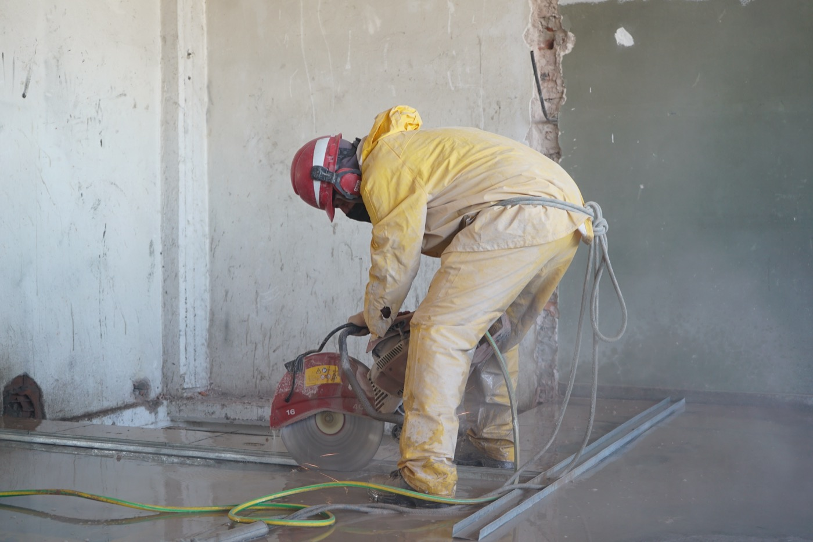
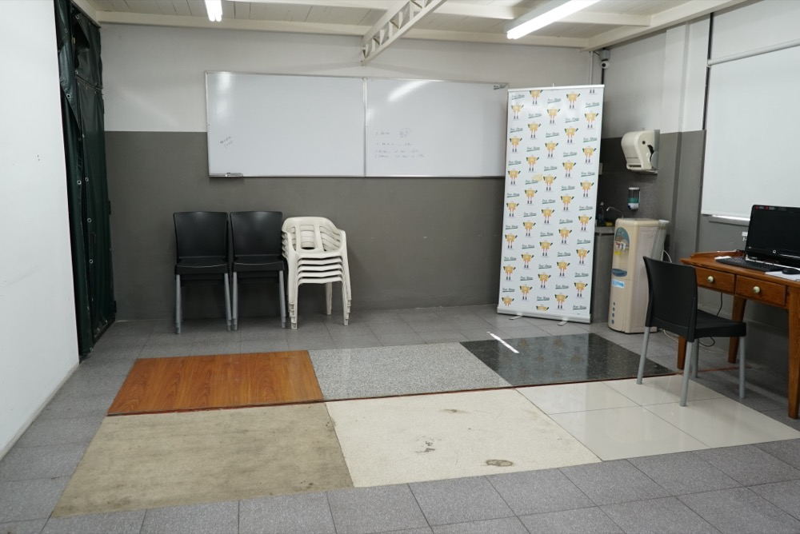
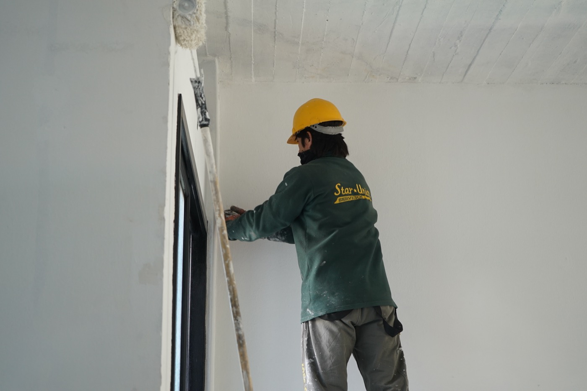
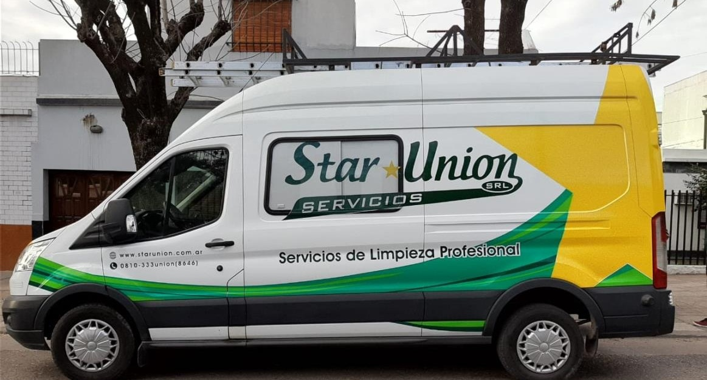
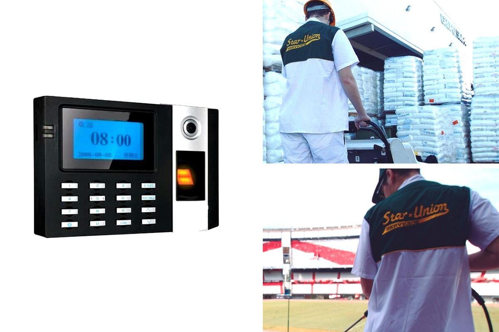
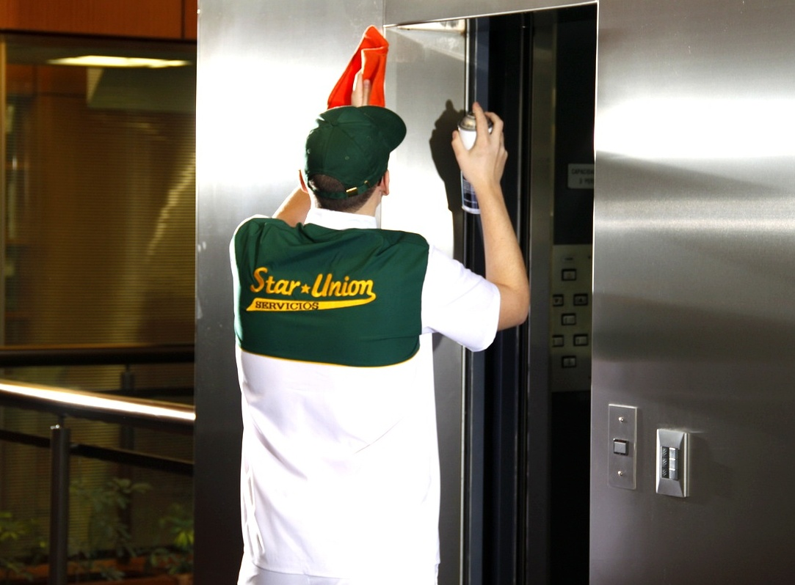

Fábricas e Industrias
Brindamos un servicio a medida de cada planta industrial, nave productiva y centro logístico
Provisión integral de mano de obra propia en relación de dependencia directa, insumos aprobados por ANMAT, herramientas y flota propia de maquinaria pesada las 24 hs, los 365 días del año, respaldados por nuestra Base Operativa propia de 800 m² en calle Guaminí (CABA).



Protocolo técnico para zonas productivas, depósitos y áreas de soporte
STAR★UNION es reconocida por su sólida trayectoria desde el año 2001 dentro del sector industrial —desde nuestros inicios en calle Pergamino hasta nuestra actual Base Operativa propia de 800 m² en calle Guaminí 5052 / 5657 (CABA)—, adaptando cada plan de trabajo a los turnos de manufactura, cambios de lote y paradas técnicas programadas sin interrumpir el ritmo productivo.
Alcance certificado ISO 9001:2015 en planta
Procedimientos operativos estandarizados que se sincronizan con los turnos de manufactura, cambios de lote y paradas técnicas programadas.
Fregado y desengrase mecanizado de naves
Remoción profunda de caucho de autoelevadores, aceites e hidrocarburos en pisos de hormigón alisado y epoxi sin dejar humedad residual.
Limpieza técnica aérea de cabriadas y conductos
Aspirado y despolvoreo en altura de estructuras reticuladas, bandejas portacables, luminarias industriales, tuberías y lucernarios.
Higiene intensiva de vestuarios, duchas y comedores
Sanitización entre turnos de vestuarios masivos de planta, baterías sanitarias, comedores industriales, consultorios médicos y oficinas técnicas.
Gestión de residuos en planta y parquización
Recolección interna clasificada hacia puntos de acopio (cartón, film stretch, húmedos) y mantenimiento integral de predios verdes fabriles.
Supervisión HSE (CPQ 6999) e indumentaria ARCIEL
Cumplimiento de normas BPM/GMP, entrega registrada de EPP homologados, hojas de seguridad MSDS en pañol y código de 4 colores.
Por dentro de nuestra Base Operativa de 800 m² en calle Guaminí (CABA)
Inmueble propio de 3 plantas en Guaminí 5052 / 5657 (C1439HAW) con centro logístico, taller electromecánico, laboratorio de 6 pisos y escuela de capacitación.

1. Edificio Propio de 800 m² (3 Niveles)
Sede central propia con centro de operaciones, administración, depósito mayorista de insumos registrados en ANMAT y despacho de flota.

2. Parque Propio de Maquinaria Pesada
Fregadoras hombre a bordo, lavadoras automáticas Convertamatic 20B a batería, rotativas de 175 RPM, hidrolavadoras 150 bar y aspiradoras industriales.

3. Taller Electromecánico In-House (Recambio en el Día)
Mantenimiento preventivo y correctivo propio de máquinas monofásicas, trifásicas, a batería y a explosión, con cabina de arenado y pintura propia.

4. Auditorio de Capacitación e Inducción
Sala de formación propia donde cada operario y supervisor es entrenado en procedimientos ISO 9001:2015, seguridad e higiene (CPQ 6999) y código de 4 colores.

5. Laboratorio-Escuela con 6 Superficies de Pisos
Pista de pruebas interna con 6 tipos de pisos reales (madera/parquet, granito, mosaico, cemento alisado, terrazo y porcelanato) para entrenar el uso de químicos y discos.

6. Flota Propia de Utilitarios y Auxilio Móvil
Vehículos utilitarios propios ploteados para distribución programada de insumos, traslado de maquinaria y supervisión presencial móvil en CABA y GBA.
Reloj de Control Biométrico en Planta con Alerta a los 15 Minutos
En servicios con dotaciones permanentes instalamos nuestro reloj biométrico de huella dactilar en el objetivo (solo requiere punto de red y 220V). Hacé clic en cada etapa para ver cómo eliminamos las ausencias sin cubrir:
Validación de Huella Dactilar en el Establecimiento
Al ingresar y retirarse del establecimiento del cliente, cada operario registra su huella dactilar en el terminal biométrico conectado en línea con nuestra Base Operativa en calle Guaminí. El cliente dispone de trazabilidad exacta de horas-hombre efectivamente cumplidas.

Terminal Biométrico en Línea
Detección temprana de ausencias a los 15 minutos sin esperar reclamos del cliente.

Uniformes Reglamentarios ARCIEL
Chaqueta blanca/verde (Oficinas y Salud), chomba verde (Industria), grafa negro (Mantenimiento) y EPP con puntera.
Brindamos un Servicio Responsable y Sin Riesgo Solidario (Art. 30 LCT)
Como empresa líder del mercado, garantizamos indemnidad solidaria total (Art. 30 LCT) con el 100% del personal en nómina directa y preservación del medio ambiente. Entregamos del 1 al 10 de cada mes F931 AFIP, recibos de sueldo, acreditaciones bancarias y ART con cláusula de no repetición. Realizamos capacitación continua con nuestro Licenciado en Seguridad e Higiene propio (Mat. CPQ 6999), utilizando insumos biodegradables aprobados por ANMAT con hojas MSDS en pañol y código de 4 colores.
Supervisión Ejecutiva Directa de sus Socios Gerentes
En STAR★UNION es prioritario brindar máxima calidad y trazabilidad en cada servicio para que nuestros clientes operen con total tranquilidad en todas las áreas donde desplegamos nuestro conocimiento técnico.
Nuestros métodos combinan sistemas innovadores de higiene corporativa e industrial, controles exhaustivos de calidad auditados bajo norma ISO 9001:2015 por TÜV Rheinland (ID 9000041847), maquinaria propia de última generación y supervisión ejecutiva directa de sus socios gerentes (Juan Antonio Repetto y Mauro Repetto), única entre nuestros competidores.
16 Brochures y Protocolos Técnicos en PDF por Rubro
Hacé clic en cualquiera de las 16 verticales para abrir o descargar su Brochure en PDF A4 con links interactivos incorporados.
Fábricas y Plantas Industriales
Naves productivas, depósitos logísticos, desengrase mecanizado, cabriadas y vestuarios.
Brochure Institucional Star Union
Base propia de 800 m² en Guaminí, taller propio, escuela de 6 pisos y biometría 15 min.
Vidrios y Trabajos en Altura
Cuadrillas propias ARAA: curtain wall, silletas, balancines, hidroelevadores y ósmosis.
Oficinas Corporativas
Pisos corporativos, salas de directorio, tabiques vidriados, alfombras y guardia diurna.
Laboratorios e Industria Farma
Protocolos alineados a POEs, trazabilidad en planillas, esclusas y áreas limpias.
Clínicas, Sanatorios y Salud
Higiene crítica y semicrítica 24/7, doble balde por código de 4 colores e insumos ANMAT.
Consorcios y Edificios
Reemplazo garantizado en vacaciones/licencias, halls, amenities, cocheras y legajo Art. 30.
Universidades y Colegios
Operación sincronizada en recreos y entre turnos para aulas, comedores y campos deportivos.
Instituciones Deportivas
Desinfección de vestuarios y duchas, gimnasios, canchas cubiertas y corte de césped.
Centros Comerciales y Retail
Fregado mecanizado de malls e hipermercados, patios de comidas, baños y cocheras.
Aeropuertos y Terminales
Salas de preembarque, check-in, mangas, cintas de equipaje y ventanales a plataforma.
Concesionarios Automotrices
Brillo espejo en salones de exposición 0 km, vidrieras y desengrase de talleres postventa.
Hoteles y Convenciones
Lobbies, salones de convenciones, lavado de alfombras y tapizados, cocinas y fachadas.
Ómnibus y Bases de Transporte
Acondicionamiento de giro rápido en cabecera, sanitarios químicos, butacas y talleres.
Organismos Oficiales
Cumplimiento de pliegos licitatorios con certificación ISO 9001:2015 y solvencia fiscal.
Limpieza de Final de Obra
Unidades móviles Ford Transit, remoción técnica de cemento/pintura y curtain wall.
Solicite una Visita de Diagnóstico (Propuesta en 24 a 48 hs)
Relevamos sus instalaciones en CABA y GBA para dimensionar dotación, frecuencias y parque de maquinaria óptima, entregando propuesta técnica y económica a medida.